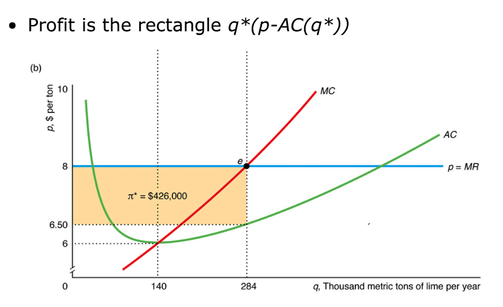

In perfect competition, profit is the rectangle \(q^*(p - AC(q^*))\) where the firm produces at the quantity where \(p = MR = MC\).

A perfectly competitive firm is maximizing its profit in the short-run. At the profit-maximizing level of output, \(P < ATC\).
Compared to the short-run, in the long-run there will be _____ firms, and each firm will produce ________ quantity.
There are 80 firms in a perfectly competitive market, each with the following total cost function:
\[TC(q) = 144 + 4q^2\]
Market demand is represented by:
\[Q_D = 1600 - 30P\]